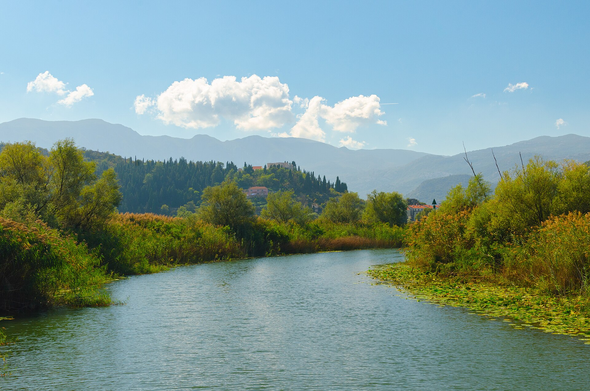

Marked on the map · 2 pins
Nicole's own pins from the map list — each opens straight in Google Maps.

No. 09 · Montenegro · The big lake between the mountains
The largest lake in the Balkans, split between Montenegro and Albania — a slow, reedy water world of pelicans and fishing villages. Two pinned spots cover the lake and its prettiest river bend.
The list
| No. | Thing | Notes |
|---|---|---|
| 1 | Virpazar boat trip | 2–3h on the lake: pelicans, lily pads, herons. Go morning for flat water. Lands well as a Day 10 morning on the way to Tirana. |
| 2 | Rijeka Crnojevića bends | Short boat ride up the river to the Obod fortress viewpoint — the picture everyone posts from the lake. |
| 3 | Pavlova Strana viewpoint | Drive or taxi above the river for the S-bend look down (best near sunset). |
| 4 | Beska monastery | Some Virpazar boats loop out to the island monastery — ask before you book. |
Eat & drink: lake carp and smoked fish in Virpazar or Rijeka Crnojevića; cash for the boat skippers. Currency is the euro on the Montenegrin side.Field note · Balkans 2027
Marked on the map · 2 pins
Nicole's own pins from the map list — each opens straight in Google Maps.
| No. | Pin | Open |
|---|---|---|
| 1 | Shkodra LakeThe lake itself — boat trips run from Virpazar on the Montenegrin side. | Maps ↗ |
| 2 | Rijeka CrnojevićaThe old royal river village — boat out to the bends of the river under the fortress. | Maps ↗ |